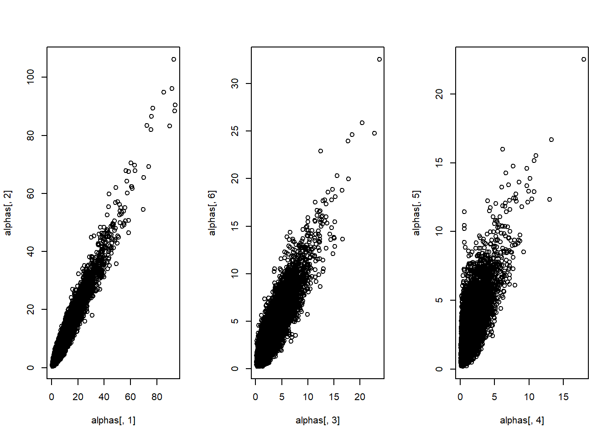

Chapter 20 =======
| Query | Given | Using | mean | sd |
|---|---|---|---|---|
| Incidence | Case==0 | posteriors | 0.336 | 0.007 |
| Incidence | Case==0 | parameters | 0.333 | |
| Incidence | Case==1 | posteriors | 0.661 | 0.007 |
| Incidence | Case==1 | parameters | 0.667 | |
| ATE | Case==0 | posteriors | 0.340 | 0.011 |
| ATE | Case==0 | parameters | 0.333 | |
| ATE | Case==1 | posteriors | 0.570 | 0.009 |
| ATE | Case==1 | parameters | 0.573 | |
| CATE | Case==0 | posteriors | 0.810 | 0.009 |
| CATE | Case==0 | parameters | 0.812 | |
| CATE | Case==1 | posteriors | 0.810 | 0.009 |
| CATE | Case==1 | parameters | 0.812 |
By comparing the \(ATE\) estimates using our posteriors and the estimates using the assigned parameter values, we see that we have done well in recovering the effects, both for the context we studied (i.e., in which we observed \(X\) and \(Y\)) and for the context we did not study. We can think of the learning here as akin to post-stratification. We have learned from observing \(X, Y\), and \(W\) in Context 0 how \(X\)’s effect depends on \(W\). Then we use those updated beliefs when confronted with a new value of \(W\) in Context 1 to form a belief about \(X\)’s effect in this second context. Of course, getting the right answer from this procedure depends, as always, on starting with the correct model.
We can also see, in Table ??, what would have happened if we had attempted to make the extrapolation to Context 1 without data on \(W\) in that context. We would get the wrong answer for Context 1, though we would also report greater posterior variance. The higher posterior variance here captures the fact that we know things could be different in Context 1, but we don’t know in what way they are different.
| Query | Given | Using | mean | sd |
|---|---|---|---|---|
| Incidence | Case==0 | posteriors | 0.329 | 0.007 |
| Incidence | Case==0 | parameters | 0.333 | |
| Incidence | Case==1 | posteriors | 0.675 | 0.007 |
| Incidence | Case==1 | parameters | 0.667 | |
| ATE | Case==0 | posteriors | 0.319 | 0.011 |
| ATE | Case==0 | parameters | 0.333 | |
| ATE | Case==1 | posteriors | 0.572 | 0.009 |
| ATE | Case==1 | parameters | 0.573 | |
| CATE | Case==0 | posteriors | 0.811 | 0.009 |
| CATE | Case==0 | parameters | 0.812 | |
| CATE | Case==1 | posteriors | 0.811 | 0.009 |
| CATE | Case==1 | parameters | 0.812 |
20.1 Multilevel models, meta-analysis
A key idea in Bayesian meta-analysis is that when you analyze multiple studies together you learn not only about common processes that give rise to the different results seen in different sites, but you also learn more about each study from seeing the other studies.
A classic setup is provided in GELMAN, which we have access to estimates of effects and uncertainty in eight sites (schools), \((b_j, se_j)_{j \in \{1,2,\dots,8\}}\). We assume that each \(b_j\) is a draw from distribution \(N(\beta_j, se_j)\) and that each \(\beta_j\) is a draw from distribution \(N(\beta, \sigma)\). In that setup we want to learn not just about the superpopulation parameters \(\beta, \sigma\), but also about the study level effects \((\beta_j)_{j \in \{1,2,\dots,8\}}\).
We define a model in which \(X\) points into \(Y\), and in which \(Setting\) is a third node that also points into \(Y\). Thus \(Setting\) can potentially moderate the effect of \(X\) on \(Y\). We observe an experiment that takes place in \(Setting\) 0 and also in \(Setting\) 1. Note that, in this setup, any differences in the distribution of effects of \(X\) on \(Y\) between the two settings can only arise because of \(Setting\). That is, we are here assuming the same causal effects across settings conditional on \(Setting\) itself.
We then consider the different conclusions we draw for the effect of \(X\) on \(Y\) in each setting, depending on whether we pool data across settings and on our priors over how much \(Setting\) matters for \(X\)’s effects.
We design the simulation so that in \(X\)’s true causal effect is stronger in \(Setting\) 0 than in \(Setting\) 1. We then generate data from these true parameters for each setting, 100 cases for each, and run the analysis in different ways, with results displayed in Table ??. In the first two rows, we show \(ATE\) posteriors from separate analyses of the data for each setting. We see that we recover an \(ATE\) that is higher in \(Setting 0\) than in \(Setting 1\), as expected.
In the third row (Integrated flat priors), we use data from both settings to estimate an overall \(ATE\). Moreover, we put equal weight on all possible \(Y\) types, i.e., on all possible joint effects of \(X\) and \(Setting\), meaning that we provide substantial scope for \(Setting\) to moderate \(X\)’s effects. As expected, the \(ATE\) looking across both settings lies between the \(ATE\) for each in the unpooled analyses.
In rows 4 and 5, we then estimate the \(ATE\) in each setting separately, again using flat priors that allow for substantial interactions with setting. Differently from the first two rows, however, we are using data from both settings in estimating effects for each setting. Consider what happens we estimate the \(ATE\) for \(Setting\) 0: we are using our posterior over \(Y\)’s nodal type shares to answer this query. Of course, data from \(Setting\) 0 itself provides what we might think of as the most context-specific information about the causal effect in that particular setitng. But data from \(Setting\) 1, where we also observe \(X\) and \(Y\) values, also provides information about those shares, and this additional information drawn from \(Setting\) 1 is reflected in the integrated estimate for \(Setting\) 0 – and vice versa for the integrated \(Setting\) 1 estimate. With the pooling of data, we see that the \(ATE\) for each setting…. Also note that the standard deviation of the posterior has shrunk, reflecting the fact that we have brought more data to bear on the question.
Finally, in the last three rows, we set priors such that the moderating effect of \(Setting\) is believed to be weak. Here we see that the \(ATE\)’s for the two settings converge more strongly, reflecting the influence of our low-heterogeneity priors. Moreover, our uncertainty shrinks further here, reflecting the fact that – if we believe that heterogeneity across settings is low – then we also believe that data from one setting is more informative about the other setting: i.e., we get a bigger boost in statistical power from the pooling under these priors.
| Query | Given | Using | mean | sd |
|---|---|---|---|---|
| Setting 0 | - | posteriors | 0.43 | 0.09 |
| Setting 1 | - | posteriors | 0.20 | 0.10 |
| Integrated (flat priors) | - | posteriors | 0.26 | 0.06 |
| Integrated (flat priors) | Setting==0 | posteriors | 0.36 | 0.08 |
| Integrated (flat priors) | Setting==1 | posteriors | 0.17 | 0.09 |
| Integrated (weak heterogeneity) | - | posteriors | 0.29 | 0.06 |
| Integrated (weak heterogeneity) | Setting==0 | posteriors | 0.32 | 0.07 |
| Integrated (weak heterogeneity) | Setting==1 | posteriors | 0.26 | 0.08 |
Further, we can use these same updated models to update specifically on the amount of heterogeneity across settings. We operationalize heterogeneity here as the share of units that would respond differently to \(X\) if they were in a different setting. In Table XXXX, we compare our prior on this quantity to our posterior. Where we started out with flat priors — allowing for a great deal of heterogeneity — we see that the data bring these beliefs downward. This makes sense given that, under the true data-generating process, the effects in the two settings are only moderately different. Conversely, where we start with a very low prior on heterogeneity, the data lead us to believe there is more heterogeneity than we had initially believed (though, given the strength of the prior that we have used in this example, we can still see its formidable efect on the posterior).
| Query | Given | Using | mean | sd |
|---|---|---|---|---|
| Q 1 | - | priors | 0.628 | 0.119 |
| Q 1 | - | posteriors | 0.588 | 0.122 |
| Query | Given | Using | mean | sd |
|---|---|---|---|---|
| Q 1 | - | priors | 0.077 | 0.072 |
| Q 1 | - | posteriors | 0.087 | 0.074 |
20.2 Real multilevel
In the situations we have considered so far, we are learning from and about the particular contexts that we are studying. We are combining experimental data from one setting, for instance, with observational data from another. Or we are using updating from one context to draw an inference about another setting. Our inferences in these setups are limited strictly to the settings at hand, however.
We can take a step further by building a hierarchical model. A hierarchical model allows us to think about the populations in our study sites as themselves drawn from a larger population (“superpopulation”) of settings. And, crucially, it allows us in turn to use data in the study sites to learn about that broader superpopulation of settings.
For instance, we might be studying the effect of an individual’s relative location in the income scale on their preferences for democracy. We might collect data in a set of 10 countries and estimate the average causal effect of relative income in each of them. We can readily average inferences across these countries or study country-level moderators of the effect to explain differences in effects across the 10 countries. Yet these data from the 10 countries also contain information of a more general sort: they tell us something about the “superpopulation” of settings from which these 10 countries have been “drawn.”
Let’s review how our analytic setup has worked so far. At each node in a causal model, we conceptualize a given case as have a particular nodal type. The case’s nodal type is drawn from a distribution of nodal types in the population of cases from which this case has been drawn. When we do process tracing, we consider that population-level distribution to be a set of fixed shares of nodal types in the population: say, for node \(Y\), we might believe that half the cases in the population are \(\lambda^Y_{01}\), a quarter are \(\lambda^Y_{00}\), and a quarter are \(\lambda^Y_{11}\). We then use data from the case to update on the case’s nodal types (or on the combination of nodal types that correspond to some case-level query), given the population-level shares.
When we engage in population-level inference, we begin with uncertainty about the population-level shares of types, and we express our prior beliefs about those shares as a Dirichlet distribution. So, for instance, our beliefs might be centered around a \(\lambda^Y_{01}=0.5, \lambda^Y_{00}=0.25, \lambda^Y_{11}=0.25\) breakdown of shares in the population; and we also express some degree of uncertainty about what the breakdown is. Now, when we analyze data on some number of cases, we can update both on those cases’ types and on our beliefs about the distribution of types in the population – perhaps shifting toward a higher share of \(\lambda^Y_{01}\)’s (and with a change in the distribution’s variance).
We can also, as in the last section, build a model in which there are multiple settings, possibly differing on some population-level characteristic. Fundamentally, however, the setup in the last section still involved population-level inference in that we were assuming that the type shares (\(\lambda\) values) are the same across settings. The settings might differ in the value of a moderating variable, but they do not differ in the shares of cases that would respond in any given way to the moderator (and other causal conditions). The data allow us to update on what those common, cross-setting type proportions are.
When we build a hierarchical model, each case is still understood as being embedded within a population: our cases might be citizens, say, each embedded within a country. The key difference from population-level inference is that we now conceive of there being multiple populations – say, multiple countries – each drawn from a population of populations, or superpopulation. Now, we think of each population (country) as having its own set of type shares for each node. And we think of each country’s type shares as being drawn from a Dirichlet distribution of type shares (for each node) that lives at the superpopulation level. Moreover, we are uncertain about what that distribution at the superpopulation level is. We uncertain around what type proportions the superpopulation-level distribution is centered, and we are uncertain about how dispersed this distribution is. While the distribution’s central tendency will be related to the mean type shares for countries, its variance will determine the degree of heterogeneity across countries in their type shares.
To summarize, in population-level inference, we express uncertainty about the population’s type shares with a Dirichlet prior, at the population level, on which we update. In the hierarchical setting, we are uncertain both about the population-level type shares and the superpopulation Dirichlet from which each node’s type shares are drawn. We express our uncertainty about each superpopulation Dirichlet by positing a prior distribution over the Dirichlet’s alpha parameters.
Now, when we observe data on citizens within countries, we can update our beliefs about types fora the particular citizens we observe, about type shares in the population of citizens within each country that we study, and on the parameters of the Dirichlet distribution from which population shares have been drawn. In updating on the last of these, we are learning not just about the countries we observe but also about those we do not directly observe.
We illustrate with a simulation using a simple \(X,Y\) model. We imagine that we are studying the \(X \rightarrow Y\) relationship in n countries. Each country has a parameter distribution drawn from common Dirichelets. We start off with flat priors over the alpha arguments of the superpopulation Dirichlets.
We assign a particular true set of superpopulation parameter values that, for the analytic exercise, is treated as unknown and that we would like to recover. In this true world, the probability of assignment to \(X=1\) is .4, and the average treatment effect is .1. Using these true parameter values, we simulate \(X, Y\) data for \(n=8\) countries.

In Figure ??, we graph our posterior beliefs about the superpopulation parameters. We do this by plotting two alpha parameters against each other at a time. In the first panel, we plot the alphas for \(X=0\) and \(X=1\). In the next panel, we plot the alpha’s corresponding to \(c\) types against those corresponding to \(d\) types. And in the third panel we plot the alpha’s corresponding to \(a\) types against those corresponding to \(b\) types.
As we can see, each distribution falls roughly along a diagonal. Probability mass located further up the diagonal represents worlds in which the superpopulation Dirichlet distribution of type shares is relatively low in variance. Thus, the more that our posterior beliefs are concentrated toward a graph’s northeast corner, the lower the heterogeneity we have inferred there to be in the relevant type shares across countries. Meanwhile, the dispersion of probability mass away from the diagonal represents greater posterior uncertainty about the heterogeneity across countries, arising from greater variance about the posterior distribution of the alphas.
We can think of a concentration parameter here that is operationalized as the sum of the \(\alpha^j\) terms for a node, \(j\), with a higher value representing lower overall heterogeneity.

In the Figure ?? we turn to the causal query of interest and show a comparison of three \(ATE\) estimates for each country: in blue, we show the unpooled estimate, or the estimate we get for each country using only data from that country; in red, we see the pooled estimates, or the estimate we get for each country using data from all countries to inform that country’s parameter estimates; and in black, we plot the truth as posited for this simulation. As we can see, the pooled estimates are all closer to the center than the unpooled estimates: this is because we are effectively using data from all countries to discount extreme features of the data observed in a given country. Put differently, the pooled data serve the function of a prior when it comes to drawing inferences about a single country: our inference is a compromise between the data from that country and the beliefs we have formed from the pooled data. We can also see that, for most countries, the pooling helps: the regularization provided by the pooling gives us an estimate closer to the truth for most of the settings.